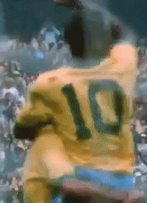
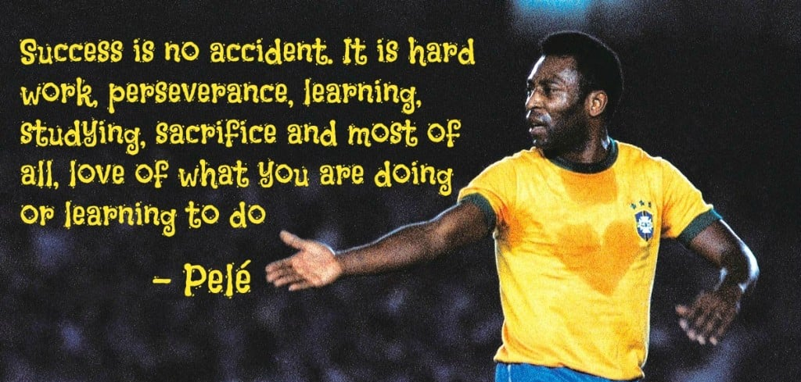
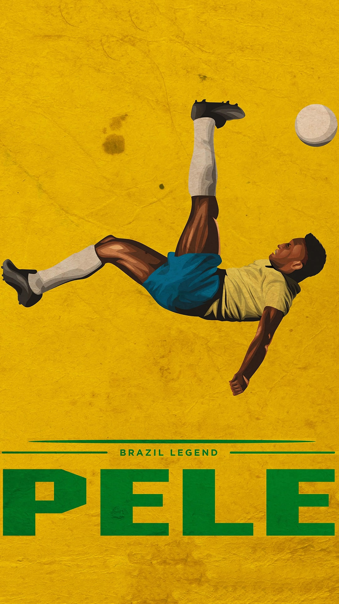

Biography
Edson Arantes do Nascimento, popularly known as Pele was a Brazilian professional footballer who played as a forward who played for the Brazil national team and is best known for his time at Santos. Pele is widely considered to be the best football player of his time and of all times. He won three FIFA World Cups and was named the FIFA co-Player of the Century in 1999. He passed away on December 29th, 2022, at the age of 82 due to multiple organ failure.